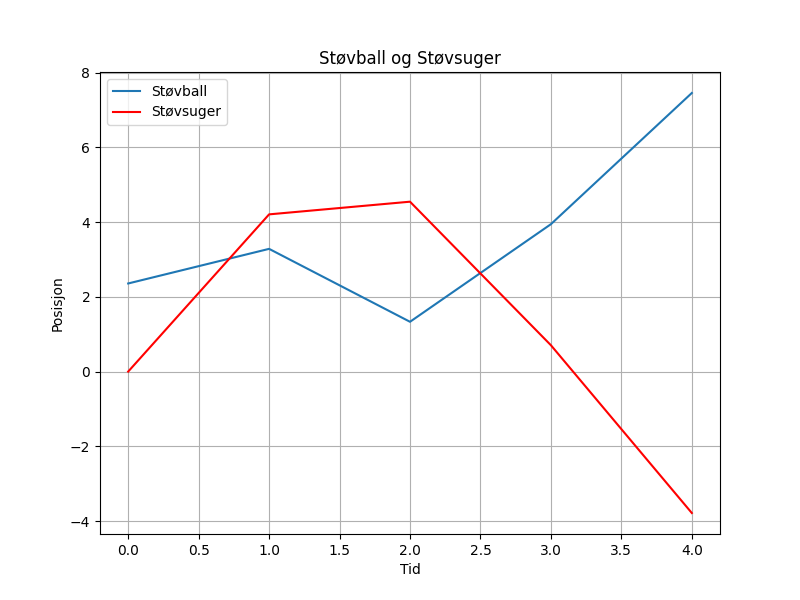

En ensom støvball under sengen, drømmer om å bli til en sky. Han danser lett i solens stråler, før støvsugeren våkner på ny.

import matplotlib.pyplot as plt
import numpy as np
# Dikt
dikt = """
En ensom støvball under sengen,
drømmer om å bli til en sky.
Han danser lett i solens stråler,
før støvsugeren våkner på ny.
"""
# Parameter for visualisering
n = 100
theta = np.linspace(0, 2*np.pi, n, endpoint=False)
r1 = 1 + np.sin(3*theta)
r2 = 1 + np.sin(5*theta)
r3 = 1 + np.sin(7*theta)
# Figur 1: Sky representert ved radier
fig1, ax1 = plt.subplots(figsize=(8, 8), subplot_kw={'aspect': 'equal'})
ax1.plot(r1*np.cos(theta), r1*np.sin(theta), 'b', label='Støvball')
ax1.plot(r2*np.cos(theta), r2*np.sin(theta), 'r', label='Sky')
ax1.plot(r3*np.cos(theta), r3*np.sin(theta), 'g', label='Solstråler')
ax1.set_title('Sky og Støvball')
ax1.set_xlabel('X')
ax1.set_ylabel('Y')
ax1.grid(True)
ax1.legend()
plt.savefig(output_path)
# Figur 2: Støvsugers bevegelse over tid (forenklet)
time = np.arange(0, 5)
støv_pos = np.random.rand(len(time)) * 10 # Simulerer posisjon
støvsug_pos = np.sin(time) * 5 # Simulerer bevegelse
fig2, ax2 = plt.subplots(figsize=(8, 6))
ax2.plot(time, støv_pos, label='Støvball')
ax2.plot(time, støvsug_pos, label='Støvsuger', color='red')
ax2.set_title('Støvball og Støvsuger')
ax2.set_xlabel('Tid')
ax2.set_ylabel('Posisjon')
ax2.grid(True)
ax2.legend()
plt.savefig(output_path)execution_ok=True fallback_used=False image_ok=True